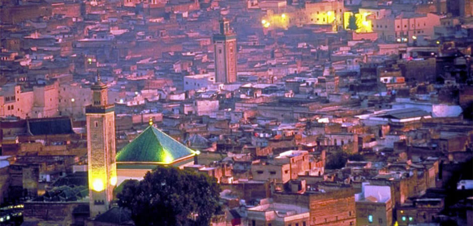
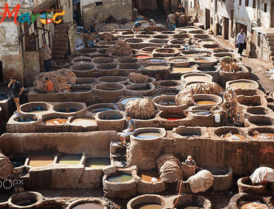

Envie de découvrir Fès ? Il y a mille et une façons de le vivre. La ville impériale est la capitale de la culture traditionnelle du Maroc. Berceaux du savoir, ses superbes medersas en sont le flamboyant symbole. Cette ville fortifiée, inscrite au patrimoine mondial de l’UNESCO, vous ramènera au Moyen-Âge. Situé à l'intérieur de la médina, l'entrée dans le quartier Bab Bou-Jeloud s'effectue par son immense porte de , décorée de faïences bleues et vertes, les couleurs de la ville. A l'intérieur de ce quartier, les visiteurs pourront visiter le musée Bar Batah, regroupant les Arts et Traditions de la ville. Ce dernier a pris place dans le palais du même nom, érigé au cours du 19ème siècle. 
L'école coranique Bou Inania possède une architecture gorgée de diverses ornementations.
Construite au milieu du 14ème siècle, cette médersa
s'inscrit dans le processus de dynamisation de la ville engagé par la dynastie des mérinides. Les touristes pourront également se balader le long de l'avenue Talaa Kebira, une des plus longues de la ville, parsemée de boutiques commerçantes.

L'université Al Quaraouiyine à Fès est considérée comme la plus ancienne au monde par l’Unesco, le Guinness des records et d'historiens musulmans. Encore en activité, sa construction a été initiée en 859 sous le règne de la dynastie idrisside. Elle a vu passer de grands philosophes arabes comme Averroès (Ibn Rochd) et Avempace (Ibn Baja). Elle est l'emblème de la ville et son architecture est un des meilleurs représentant du style arabo-andalou. Son nom est issu de la communauté des 2000 familles urbaines kairouanaises (de Kairouan) qui s'était installée et avait fondé le nouveau quartier dans la ville. Fondée au IXe siècle, elle fut d'abord une école coranique dépendant d’une mosquée. À ce titre, elle peut postuler au titre de la plus ancienne université du monde, ou en tout cas le plus vieil établissement d'enseignement. Cela, si toutefois l’on ne tient pas compte des écoles philosophiques fondées à Athènes au IVe siècle av. J.-C., comme l’Académie de Platon (-387), de la bibliothèque et du Musée d’Alexandrie (-IIIe siècle), et des nombreuses écoles supérieures qui s’en sont inspirées dans l’empire gréco-romain ; des écoles attenant aux grands monastères bouddhistes comme celui de Nālandā fondé au IIe siècle en Inde ; ou de l’ « université » de Gundishapur en Perse (IIIe siècle ap. J.-C.)
Le Borj Nord est un fort élevé en au nord de Fès, au Maroc, sur ordre du sultan Ahmed al-Mansur, dont le plan s'inspire de l'architecture des forteresses portugaises du XVIe siècle. Il était l'un des plus grands postes de surveillance de la ville de Fès et servait également de fabrique de canons. De plan carré, les quatre coins sont dotés de quatre bastions en forme de fers de lance. La terrasse est conçue de manière à résister au poids et aux tirs des canons. Ayant servi de caserne puis de prison du temps du Protectorat français, le monument abrite depuis le Musée des Armes.
Le palais royal de Dar el-Makhzen, est un palais situé dans la commune de Méchouar Fès Jdid, à Fès, au Maroc. D'une surface de 80 hectares, le site intègre le palais royal, une mosquée, une médersa (fondée par les mérinides en ) ainsi qu'une place d'arme. Il s'ouvre sur la place des Alaouites par d'immenses portes ciselées dans le cuivre réalisées par un artisan local vers . Au crépuscule, les derniers rayons du soleil embrasent le métal, donnant à l'ouvrage des allures de joyau d'or.
Bab Boujloud est une des portes de l'ancienne Medina de Fès (Fès el-Bali) et ouvrant sur Fès el-Jdid Construite au XIIe siècle, la porte Bab Boujloud faisait initialement partie de la Casbah Boujloud. La porte est constituée de trois portes dont deux plus petites symétriques. La porte est couverte de céramiques bleues, couleur de la ville de Fès à l'extérieur et vertes, couleur de l'Islam côté médina. Elle a été réalisée en bois de cèdre et stucs sculptés qui seront restaurés incessamment. La dernière grande restauration de la porte date de . Aujourd'hui, la ville travaille également à agrandir la place Boujloud.
Considéré comme l’un des sanctuaires les plus sacrés de la médina, Zaouia Moulay Idriss II est dédié au fondateur de Fès et souverain du Maroc de 807 à 828. Achevée en , elle a été conçue dans un style qui a prévalu pendant la vie de Moulay Idriss. Pour les musulmans en visite, il est considéré comme une chance de venir au sanctuaire, et beaucoup de femmes pensent que cela aidera leur fertilité. Pour tous les autres, il est possible d’entrevoir une partie du bel intérieur et de la tombe de l’entrée et de voir brûler de l’encens et des bougies.
Le climat de Fès est chaud et tempéré. En hiver, les pluies sont bien plus importantes à Fès qu'elles ne le sont en été. La classification de Köppen-Geiger est de type Csa. La température moyenne annuelle est de 18.0 °C à Fès. Sur l'année, la précipitation moyenne est de 536 mm comme vous pouvez le constatez dans le tableau suivant.
| Janvier | Fevrier | Mars | Avril | Mai | Juin | Juillet | Aout | Septembre | Octobre | Novembre | Decembre | |
|---|---|---|---|---|---|---|---|---|---|---|---|---|
| Température moyenne (°C) | 9.9 | 11.3 | 14 | 16.2 | 19.1 | 23.3 | 27.1 | 27.2 | 23.9 | 19.2 | 14.4 | 10.9 |
| Température minimale moyenne(°C) | 4.2 | 5.3 | 8 | 9.8 | 12.1 | 15.4 | 18 | 18.4 | 16.2 | 12.9 | 8.6 | 5.8 |
| Température maximale (°C) | 15.7 | 17.3 | 20 | 22.7 | 26.1 | 31.2 | 36.2 | 36.1 | 31.7 | 25.6 | 20.3 | 16.1 |